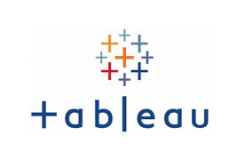

Analyzing Netflix movies from the 1990s by filtering for movies and action genres, visualizing the distribution of movie durations, and counting how many short action movies (less than 90 minutes) there are, using both a loop and a more efficient method.

Covid Data Exploration in SQL server. This project shows the Global numbers, Percentage of population infected, Total deaths per continent, and Percent population infected.

Tableau Project Dashboard.

This project involved cleaning and transforming raw housing data for Nashville in SQL server.
This project looks at what variables effect the gross revenue from movies.
The goal of this project was to predict the customer's brand preference between product of a store. This project was done in R.

The dataset analysis explores trends and factors contributing to bird strikes in aviation, including the impact of altitude, wildlife species, and aircraft size on damage and costs. Insights from statistical tests and predictive modeling highlight critical areas for improving aviation safety and reducing economic losses.

The dataset analysis involed data cleaning and explores Amazon's movies trends.
This project leverages available datasets to uncover the underlying patterns and correlations that drive child and infant mortality rates across African countries.